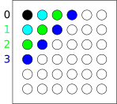
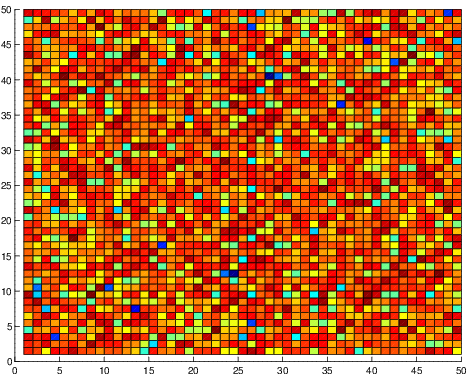
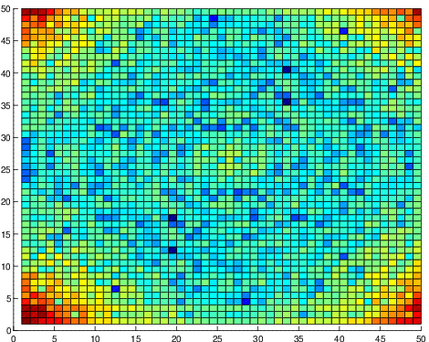
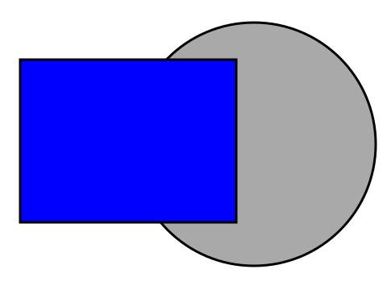
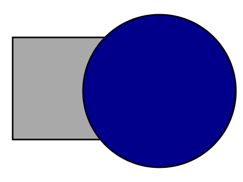
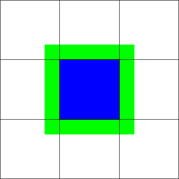

Applications of Parallel Computers
Krylov subspace methods
Prof David Bindel
Please click the play button below.
Goal
Solve \[
Ax = b,
\] where \(A\) is sparse (or data sparse).
Our goal for both of today’s lectures will be solving the linear system Ax = b where A is assumed to be sparse or data sparse. Really, the only thing that we need to assume for most of this slide deck is that we can do fast matrix-vector products with A.
There’s a lot in this deck, and I always go through slides faster in narration than I would in an ordinary lecture. Do take frequent breaks to stare at the slides and think a bit.
Krylov Subspace Methods
What if we only know how to multiply by \(A\) ?\[
\mathcal{K}_k(A,b) = \operatorname{span}\left\{
b, A b, A^2 b, \ldots, A^{k-1} b \right\}.
\] Gives surprisingly useful information!
If the only thing we assume is that we can multiply by A, and we want to solve Ax = b, what can we do? We take b and start multiplying by A, because there isn’t much else to do! This lets us build up a so-called Krylov subspace spanned by powers of A times b. Another way to think of this is that we’re computing the space of all possible products p(A) b for polynomials p that with degree less than k. This looks like a somewhat contrived space the first time you see it, but it contains surprisingly useful information!
Once we have a Krylov subspace, our goal is to find an approximate solution in that space.
Example: Conjugate Gradients
If \(A\) is symmetric and positive definite,\(Ax = b\) solves a minimization: \[\begin{aligned}
\phi(x) &= \frac{1}{2} x^T A x - x^T b\\
\nabla \phi(x) &= Ax - b.
\end{aligned}\] Idea: Minimize \(\phi(x)\) over \(\mathcal{K}_k(A,b)\) .method of conjugate gradients
Recall that a matrix A is symmetric and positive definite if A = A^T and if x^T A x > 0 whenever x is nonzero. If A is symmetric and positive definite, then we can write the solution to Ax = b as the location of the minimizer for a quadratic function phi(x) = x^T A x/2 - x^T b.
The idea behind the conjugate gradient method is to minimize phi over a Krylov subspace. At least, this is one way of phrasing the method! There are other ways to approach it as well. For more details, I recommend to you my course notes from the last time I taught CS 6210 (Matrix Computations).
Example: GMRES
Idea: Minimize \(\|Ax-b\|^2\) over \(\mathcal{K}_k(A,b)\) .Generalized Minimum RESidual (GMRES)
Not every system is symmetric and positive definite. For general linear systems, the method of choice is usually GMRES, which minimizes a least squared error over the Krylov subspace. At the level we’re discussing things, though, many of the issues are the same between CG and GMRES.
Convergence of Krylov Subspace Methods
KSPs are not stationary
Convergence is surprisingly subtle!
CG convergence upper bound via condition number
Large condition number iff \(\phi(x)\) is narrow
True for Poisson and company
The convergence of Krylov subspace methods is surprisingly subtle. These aren’t fixed point iterations, and so we can’t use that theory. Moreover, iterations like CG converge to the true solution in a finite number of steps — in exact arithmetic, at least, the behavior differs in floating point — and so asymptotic statements have to be treated with some care.
The usual way we talk about convergence of methods like CG is via the condition number of the problem: the ratio of the largest to the smallest eigenvalue problem. In the optimization formulation, having a large condition number corresponds to finding the bottom of an elongated bowl rather than a round one. Problems like our model Poisson problem tend to be ill-conditioned, and the conditioning actually gets worse for larger discretizations. But this isn’t necessarily the most intuitive approach to reasoning about convergence in this case, so we’ll talk about a couple ways that we can think about these concepts.
Convergence of Krylov Subspace Methods
Preconditioned problem \(M^{-1} A x = M^{-1} b\) Whence \(M\) ?
From a stationary method?
From a simpler/coarser discretization?
From approximate factorization?
Part of the reason we care about the convergence theory for methods like CG is that it helps us think through ways that we could transform the problem in order to get faster convergence. This type of transformation is called preconditioning.
A good preconditioner involves a matrix M for which we can do linear solves quickly, such that inv(M)*A is “close to” an identity. Examples of preconditioning strategies include sweeps of stationary methods like Jacobi, Gauss-Seidel, SOR, or their block variants; coarser discretizations of a PDE in question (if A comes from a fine discretization); approximate LU or Cholesky factorizations; and so forth. The best preconditioners often rely on knowledge of the “physics” of the problem. For example, you might drop some terms in a complicated PDE that correspond to physical effects that are nontrivial, but also don’t dominate. Of you might precondition by solving the problem on a geometrically simpler domain where you can apply transform methods.
Preconditioning is usually the single most important thing that you, as a user of iterative methods, can do to get the methods to converge fast. It’s also one of the things that requires the most insight and experimentation to get right.
PCG
r = b-A*x;
p = 0; beta = 0;
z = Msolve(r);
rho = dot(r, z);
for i=1:nsteps
p = z + beta*p;
q = A*p;
alpha = rho/dot(p, q);
x += alpha*p;
r -= alpha*q;
if norm(r) < tol, break; end
z = Msolve(r);
rho_prev = rho;
rho = dot(r, z);
beta = rho/rho_prev;
end
So far, we’ve been talking about Krylov subspace methods in the abstract. Let’s make it a little more concrete now.
This is the code for the preconditioned conjugate gradient method. Unless you’ve seen it before, it is probably utterly non-obvious how this minimizes a quadratic over a Krylov subspace! But it does.
At each step, we apply the preconditioner solve to the residual b-Ax. The resulting vector z is combined with the previous step direction in order to get a new step direction p. Then we move in the p direction from the current point until we get to the minimum along that ray; that’s alpha times p. Finally, we update the residual and check whether it’s small enough that we’re willing to declare convergence.
Feel free to stop and stare at this for a moment before moving on. One of the things to notice is the data dependencies in the code. There are several things that could be run concurrently or in a pipelined fashion, but there are at least two synchronization points per step (in the computation of alpha and the computation of rho, both involving dot products, both of which must be complete before we can do much else).
PCG parallel work
Solve with \(M\)
Product with \(A\)
Dot products and axpys
So where do we have opportunities for parallel work in this code? The big opportunities are in the preconditioner solve and the matrix-vector product. We can also get some parallelism from the dot products and the scale-and-sum operations> But those don’t involve all that much work.
Pushing PCG
Rearrange if \(M = LL^T\) is available
Or build around “powers kernel”
Old “s-step” approach of Chronopoulos and Gear
CA-Krylov of Hoemmen and Demmel
Hard to keep stable
What I wrote down is a standard way of writing PCG. There’s an equivalent rearrangement if we have a factorization of M available (e.g. if there is a Cholesky factorization) that gives us a little more room per step for parallelism, which you can look up in the Templates book or similar resources. But these types of tricks at best may get us down to a single synchronization per step.
There are potentially more impressive opportunities that come from overlapping several steps of the method with each other. This is an old idea, but tricky to get right, as rearrangements that look equivalent in exact arithmetic can nonetheless behave differently in floating point. Unfortunately, those differences are huge when it comes to Krylov methods. Chronopoulos and Gear were pioneers in this idea, but Mark Hoemmen (my academic younger brother) helped push things further in his thesis work by using a different basis for the Krylov subspace. Needless to say, there’s some subtlety here.
Apart from the subtlety around their error behavior, one of the problems with the communication-avoiding Krylov ideas is that they aren’t easy to precondition.
Pushing PCG
Two real application levers:
Better preconditioning
Faster matvecs
So, if you use the standard preconditioned CG approach rather than a communication-avoiding version — and there are still good reasons why you might not use the communication-avoiding variants — you have two real levers. You can either use a better preconditioner, where better might mean “more amenable to parallelism” or “better tuned” or just “better at making the iteration converge”; or you can speed up the matrix-vector products.
But the biggest wins typically come through the preconditioner.
PCG bottlenecks
Key: fast solve with \(M\) , product with \(A\)
Some preconditioners parallelize better!
Balance speed with performance.
Speed for set up of \(M\) ?
Speed to apply \(M\) after setup?
Cheaper to do two multiplies/solves at once...
Can’t exploit in obvious way — lose stability
Variants allow multiple products (CA-Krylov)
Lots of fiddling possible with \(M\) ; matvec with \(A\) ?
When we think about the speed of an algorithm like CG, there are two distinct effects that come into play: the cost per step, and the number of steps to convergence. Preconditioning affects both of these. Moreover, preconditioners often have a fixed setup cost that may be significant, particularly for the preconditioners that work best.
Needless to say, a lot of fiddling with preconditioners is possible. But to understand what preconditioners might be useful, and why, we need to understand a little about the convergence of the iteration without preconditioning.
Thinking on (basic) CG convergence

Consider 5-point stencil on an \(n \times n\) mesh.
Information moves one grid cell per matvec.
Cost per matvec is \(O(n^2)\) .
At least \(O(n^3)\) work to get information across mesh!
Our first approach to CG convergence involves thinking about information propagation. Suppose I wanted to solve a Poisson problem using the five point stencil, where the right hand side is one at the corner and zero everywhere else. The solution to the problem is nonzero on the whole domain. What about the approximations from CG? After one step, all vectors in the space are nonzero outside a ball of radius 1 (in the Manhattan distance) from the corner. So there might be nonzeros at the locations in black and light blue, but not elsewhere. One step later, the nonzeros get to the green line, and so forth. So on an n-by-n mesh, it takes 2n steps before we get vectors that are nonzero everywhere. Each step takes n^2 time, so we’re talking about O(n^3) time before we can even get any signal from one end of the mesh to the other!
Convergence by counting
Time to converge \(\geq\) time to move info across
For a 2D mesh: \(O(n)\) matvecs, \(O(n^3) = O(N^{3/2})\) cost
For a 3D mesh: \(O(n)\) matvecs, \(O(n^4) = O(N^{4/3})\) cost
“Long” meshes yield slow convergence
It’s pretty intuitive that we’d need at least as long to converge as we need to move information across the mesh. For this particular problem, the converse also turns out to be true: we can cut the error by a constant factor in time proportional to the time it takes to move information across the mesh. For a 2D mesh, that means that it takes O(N^1.5) time to reduce the error by a constant factor on a box; in 3D, it is O(N^(4/3)). Of course, not every domain is shaped like a box! Convergence is worse for long skinny meshes than it is for box-like meshes.
Convergence by counting
3D beats 2D because everything is closer!
Advice: sparse direct for 2D, CG for 3D.
Better advice: use a preconditioner!
You could take from the argument that I just made that it’s better to use CG in 3D and sparse direct methods in 2D, just because that’s what the connectivity favors. But really, we should say that in either 2D or 3D, we want preconditioners that can move data globally across the domain, or this type of “count the steps to cross” argument will put a lower bound on the time needed to converge.
Eigenvalue approach
Define the condition number for \(\kappa(L)\) s.p.d: \[\kappa(L) = \frac{\lambda_{\max}(L)}{\lambda_{\min}(L)}\] Describes how elongated the level surfaces of \(\phi\) are.
Another way to reason about convergence, and the way we usually do it in a numerical linear algebra class, is to talk about the condition number of the problem — the ratio between the largest and smallest eigenvalues of the matrix.
Eigenvalue approach
For Poisson, \(\kappa(L) = O(h^{-2})\)
Steps to halve error: \(O(\sqrt{\kappa}) = O(h^{-1})\) .
Similar back-of-the-envelope estimates for some other PDEs. But these are not always that useful... can be pessimistic if there are only a few extreme eigenvalues.
It turns out that we can reason out how the condition number scales as a function of mesh density for many PDE discretizations. For Poisson, the condition number scales like 1/h^2 where h is the mesh spacing. The number of steps to halve the error is bounded on the order of the square root of the condition number, which gives us something proportional to n = 1/h steps — the same estimate we got before from counting the steps to move information across the mesh.
However, this type of argument based on the condition number can be pessimistic.
Frequency-domain approach
 
Error \(e_k\) after \(k\) steps of CG gets smoother!
It turns out that there’s a very distinct pattern to how CG gets rid of the error, which we can see if we look at the Fourier transform of the error step by step. It turns out that the “high frequency” components of the error are suppressed very quickly; it is the low-frequency part of the error that takes longer for us to kill off. This sort of fits our intuition from the information-propagation arguments.
Preconditioning Poisson
CG already handles high-frequency error
Want something to deal with lower frequency!
Jacobi useless
Doesn’t even change Krylov subspace!
All right. Given these different ways of thinking about convergence of CG on the Poisson problem, what should we do to effectively precondition the iteration? What we really want is something to move information long distances across the mesh, or to deal with the smooth part of the error — different views of the same thing, really.
It turns out that Jacobi, and even Gauss-Seidel, are also most effective at reducing the smooth part of the error, so they aren’t particularly effective preconditioners. Jacobi is particularly useless; for the 5-point stencil, the diagonal part of the matrix is constant, and so Jacobi preconditioning literally does nothing to the sequence of iterates chosen by CG!
Preconditioning Poisson
Better idea: block Jacobi?
Q: How should things split up?
A: Minimize blocks across domain.
Compatible with minimizing communication!
A better idea is to use block Jacobi. Then we could at least hope to move information across the width of a block. The question, of course, is what the blocks should look like. A natural thing to do in a distributed-memory setting is to have each block correspond to the part of the vector (or the part of the domain) owned by one processor. If the time to convergence is bounded by the number of block steps across the domain, we’d like to minimize the diameter of the blocked graph. It turns out that this is very compatible with our goal of cutting things up in a way that minimizes the amount of communication we need to do at processor boundaries!
Multiplicative Schwartz
 
Generalizes block Gauss-Seidel
Block Jacobi — or block Gauss-Seidel — are OK starting points for preconditioning this problem and related problems. But it turns out that there is a tweak that we can make that can often do much better than block Jacobi or block Gauss-Seidel.
The idea here goes back to Schwarz, who was motivated by theoretical questions about PDEs. Consider something like Poisson equation on a domain described by a union of simple shapes, like the rectangle and the circle here. We know how to solve the PDE on a rectangle or a circle using separation of variables, but what about the combination? Schwarz proposed an iterative approach to getting a solution: solve the PDE on the rectangular part with fake data on the interior part of the boundary; then solve on the circle part, taking boundary data from the solve on the rectangle; then solve on the rectangle again, taking boundary data from the solve on the circle. Iterating back and forth between these two domains converges fairly quickly.
Schwarz wasn’t doing this as a numerical method, but the same idea works well numerically. Instead of solving on disjoint subsets of variables, block by block, we can solve on overlapping subsets of variables! The Gauss-Seidel like iteration described above, where we solve on one subset of variables, then the next, then the next, is known as multiplicative Schwarz. There is also a Jacobi-like iteration where we solve on each subdomain independently and then add up all the corrections; this is known as additive Schwarz.
Restrictive Additive Schwartz (RAS)

Get ghost cell data (green)
Solve everything local (including neighbor data)
Update local values for next step (local)
Default strategy in PETSc
On the face of it, additive Schwarz sounds a bit stupid. Why make more than one independently-computed correction to the same set of variables within an overlap region? It turns out that computing the corrections based on overlapping regions but then only applying one correction to any single unknown works rather better. This is known as restrictive additive Schwarz.
Funny story: restrictive additive Schwarz was supposedly invented because of a programming error in an implementation of additive Schwarz! Remember that as you’re grumbling about the errors in your project work…
As a brief aside: restrictive additive Schwarz is not a symmetric and positive definite preconditioner, so it cannot be used with CG. It works fine with GMRES, though.
Multilevel Ideas
RAS moves info one processor per step
For scalability, still need to get around this!
Basic idea: use multiple grids
Fine grid gives lots of work, kills high-freq error
Coarse grid cheaply gets info across mesh, kills low freq
Methods like restrictive additive Schwarz move information faster than one grid cell per step, but it still is limited to moving by one block per step. When we have many processors, that can still be an issue. For scalability, we really need to be able to move data by multiple processors at a time. We usually would do this by using RAS together with a “coarse grid solve.” The idea is that RAS on the fine grid kills off the high-frequency error, and the coarse grid solve kills off the smooth part of the error.
Of course, there’s no need to stop with just a fine grid and a coarse grid. We could have grids at multiple resolutions, which is the key idea behind multigrid methods.
Tuning matmul
Can also tune matrix multiply
Represented implicitly (regular grids)
Example: Optimizing stencil operations (Datta)
Or explicitly (e.g. compressed sparse column)
Sparse matrix blocking and reordering
Packages: Sparsity (Im), OSKI (Vuduc)
Available as PETSc extension
Or further rearrange algorithm (Hoemmen, Demmel).
We’ve focused for a few slides on the preconditioner. What about making the matrix-vector product run fast? After all, that’s the other big part of the work in CG.
Making sparse matrix-vector products fast is actually pretty hard. There has been work on it, of course. For problems like 2D Poisson, where the computation is very regular and we don’t need to explicitly store the matrix, Kaushik Datta worked on tuned algorithms as part of his PhD thesis work. And for explicitly-represented sparse matrices, there are other packages that block and re-order matrix representations in order to get better cache performance.
Reminder: Compressed sparse row
for (int i = 0; i < n; ++i) {
y[i] = 0;
for (int jj = ptr[i]; jj < ptr[i+1]; ++jj)
y[i] += A[jj]*x[col[jj]];
}Problem: y[i] += A[jj]*x[col[jj] ];
So why do I say that optimizing this type of operation is hard? Well, let’s consider matrix-vector products implemented in compressed sparse row format. It’s a pretty simple algorithm with two nested loops, shown here. Unfortunately, the only place where we might hope to get any cache re-use is in the accesses to x. And the access to the x array is not regularly strided; it’s all over the place! So what can we do?
Memory traffic in CSR multiply
Memory access patterns:
Elements of \(y\) accessed sequentially
Elements of \(A\) accessed sequentially
Access to \(x\) are all over!
Can help by switching to block CSR.
Well, mostly we can change the data structure. We might switch to a blocked representation that keeps dense submatrices; then we can fetch several entries of x in sequence and work on all of them together. Of we could switch to shorter integers to represent the indices, thus taking less memory traffic to read in the indexing data. But given that we have to at least read an element of A at every step, we’re limited in the amount of cache re-use we can hope to get.
Parallelizing matvec
Each processor gets a piece
Many partitioning strategies
Idea: re-order so one of these strategies is “good”
What if we want to parallelize the matvec? A natural idea is to partition the rows of A, giving each processor a piece. There are a number of possible partitioning strategies, and the key idea is to re-order things so that one of these strategies is “good.”
Reordering for matvec
SpMV performance goals:
Balance load?
Balance storage?
Minimize communication?
Good cache re-use?
Reordering also comes up for GE!
What do we mean by good? Maybe we mean that each processor should require the same amount of computation per matvec, or use the same amount of storage. Maybe we’d like to minimize interprocessor communication, or strive for good cache re-use. It turns out that all these things are fairly complementary.
It also turns out that this type of re-ordering is critical to sparse Gaussian elimination, which is the subject of our next slide deck. So we’ll pick up with this topic next time!